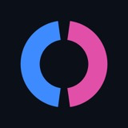

2.1 Risk before features
Every plan starts with what would hurt if it broke, scored for likelihood and impact. Features earn tests because a risk points at them, not because they exist.
Portfolio · Rotterdam, NL · rev 2026.09
I am Özgür, a test automation and quality engineer in Rotterdam. I build test systems that choose the right layer for each risk, infrastructure that stops parallel tests from fighting over shared accounts, tooling where AI drafts and humans approve, and on the side I ship deduction games for iPhone.
Playwright · TypeScript · Pact · Testcontainers · k6 · SQLite · MCP · Anthropic SDK · React Native · Maestro
A production-style showcase of choosing the right test layer for each risk around a small TypeScript service: table-driven unit tests, in-process API tests, Pact contracts, a real PostgreSQL through Testcontainers, Playwright with axe-core, k6 budgets, Promptfoo evaluations and OpenTelemetry traces, wired into four parallel CI jobs with architecture decision records.
5 parallel CI jobs · 9 quality layers · 50 automated tests · 96% mutation score · 6 ADRs · live evidence page
Parallel test workers fight over shared accounts and sandboxes, and the flakiness looks like application bugs. TestLease is an open-source server that gives each worker an exclusive, expiring lease: one owner per resource enforced by the database, a heartbeat that keeps slow workers alive and a TTL that frees crashed ones, fair waiting, quarantine for contaminated accounts, and an event trail as evidence. Secrets never leave the server. HTTP API, Playwright fixtures, a CLI, and an MCP server for agents.
7 npm packages at v0.2.0 · 129 automated tests · 8 Chromium workers on 3 accounts, 0 overlaps · 15 ADRs · Docker image on GHCR · Apache-2.0
Describe an application and get a risk-based test plan from Claude, with every scenario placed at the layer that can prove it. Turn the browser scenarios into a Playwright spec, pass it through a deterministic guardrail lint that blocks sleeps and brittle selectors, and run it on GitHub Actions against allowlisted targets. A static site with no backend; your API key stays in your browser.
102 unit and component tests · 14 E2E with network-level API mocks · verified end to end on Claude Opus 5 · 5 ADRs
A pure deduction game for iPhone: four digits, ten guesses, zero luck. Seven modes built on one mechanic, from colour-coded feedback to a chess-clock blitz, plus a daily puzzle with a streak worth keeping. The website runs the app's own evaluator, so today's round is playable in the browser.
3,829 Jest cases across 250 suites · 7 modes on one mechanic · daily puzzle with streaks · playable round on the web

OutguessWord battles. Same word, two boards, and every guess leaks information to both players; fewer guesses wins. A daily duel against the same rival as everyone else, a ranked ladder, and challenges you send to friends.
1,237 Jest cases across 122 suites · daily duel · ranked ladder · friend challenges · released September 2026
Every plan starts with what would hurt if it broke, scored for likelihood and impact. Features earn tests because a risk points at them, not because they exist.
Pure logic in unit tests, HTTP semantics in API tests, contracts between services, real infrastructure only where its semantics matter, and the browser for critical journeys. Small end-to-end suites stay green.
Models are good at drafting plans and specs and poor at deciding what a test should mean. A deterministic lint and a reviewer sit between every proposal and CI.